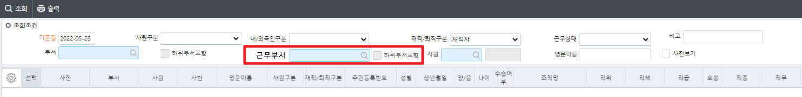

5/26 사원명부조회_cns
1) "인원현황예외자등록"에 포함된 인원은 제외 요청 (화면:인원현황예외자등록)
2) 병역 사항 (입대일 / 전역일) 추가
3) 조회조건 근무부서 추가 및 위치 변경 (탭순서 오른쪽 상단에서 왼쪽 하단으로 맞춤) -이미지
4) 조직명(근무) 컬럼 추가

근무부서 코드도움
조회조건
근무부서 DataBlock1 WkDeptName WkDeptSeq
CheckBox 하위부서포함 DataBlock1 IsLowWkDept
시트
조직명 DataBlock3 DeptFullName
조직명(근무) DataBlock3 WkDeptFullName
입대일 DataBlock3 MilEnrolDate
전역일 DataBlock3 MilTransDate